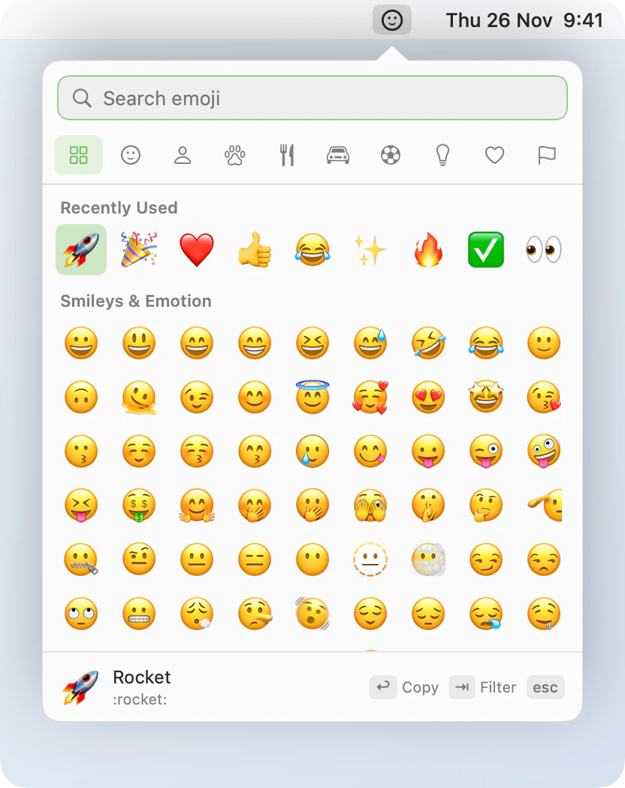
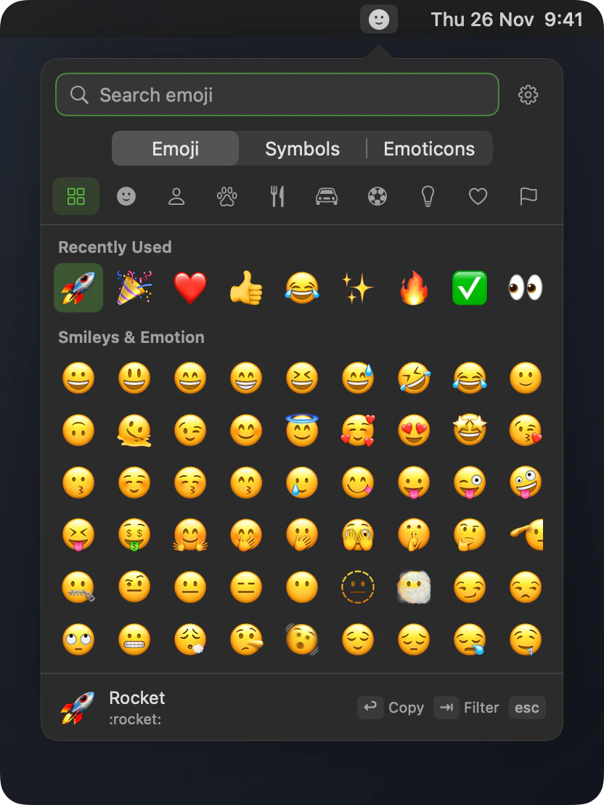
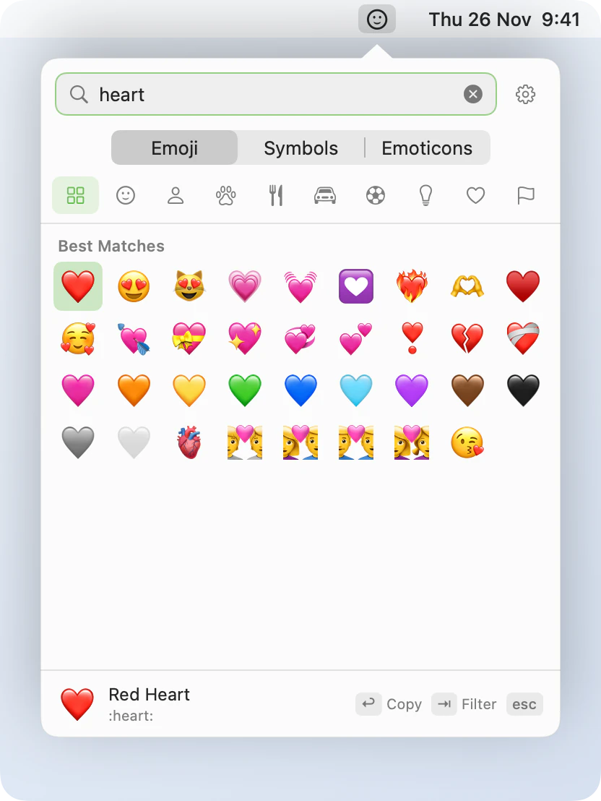
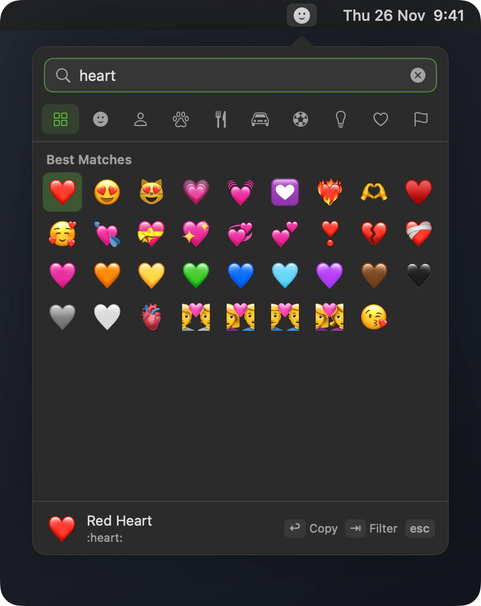
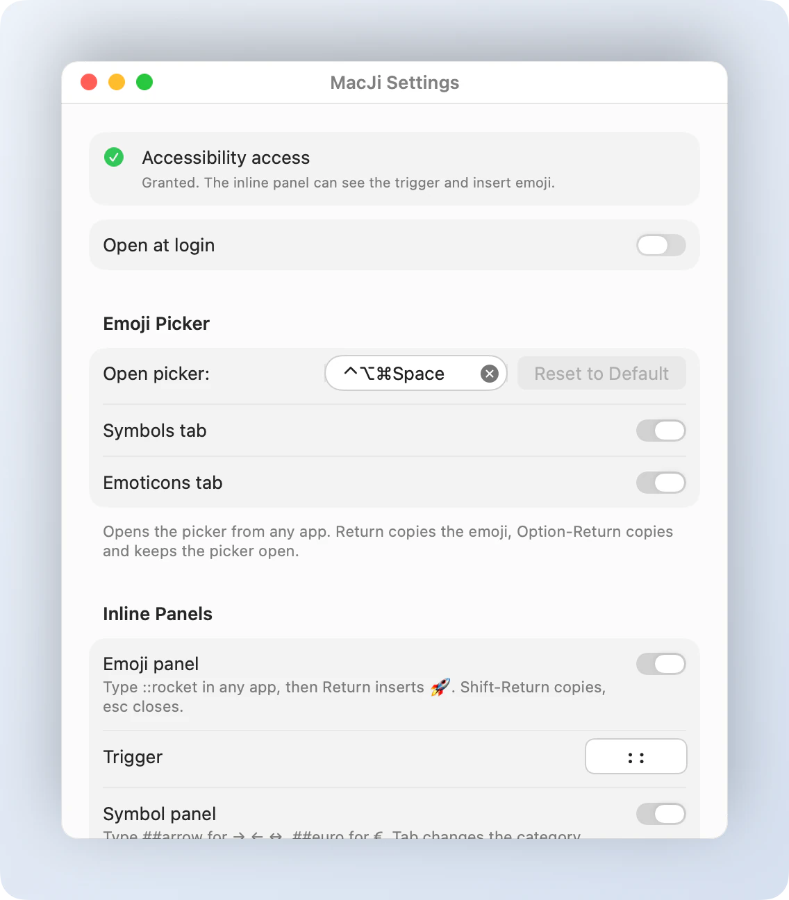
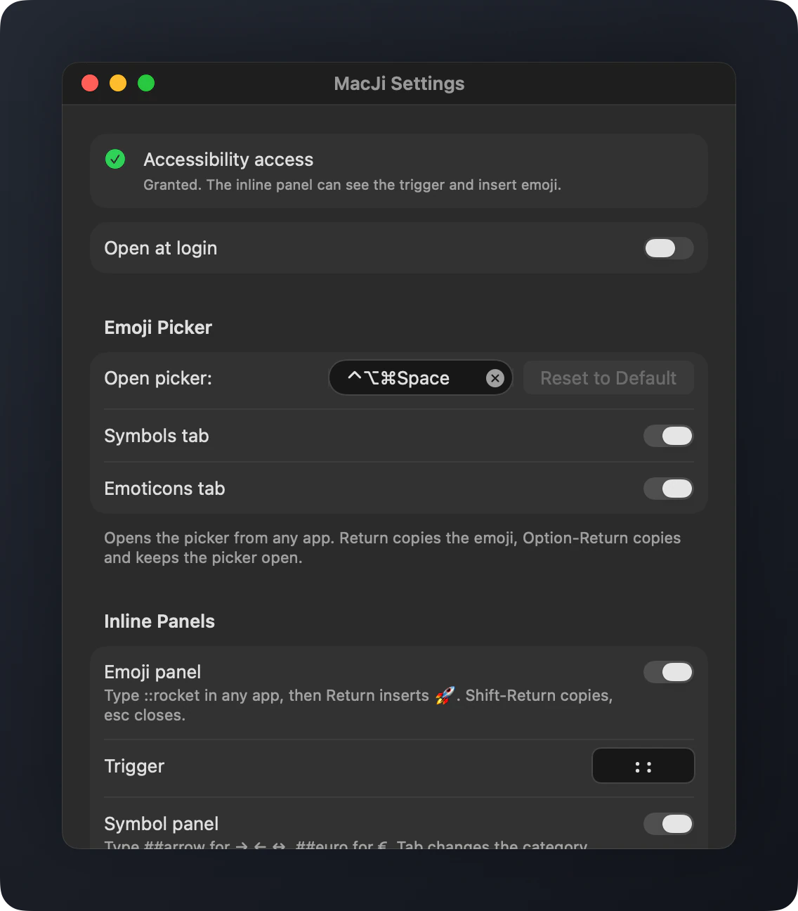

Emoji picker
Click the menu-bar icon or press ⌃⌥⌘Space from any app. Browse by category, pick from your recents, or search, all from the keyboard.


Free · Open source · macOS 14.6 or later
Type ::rocket in any Mac app, press Return, and it becomes 🚀.
Version · · Universal app for Apple silicon and Intel
26 November at 9:41
✅ Tests pass on CI
✅ Release notes written
Your turn: type in the note, or try
The inline panel keeps your hands on the keys. The picker is there when you'd rather browse.
Click the menu-bar icon or press ⌃⌥⌘Space from any app. Browse by category, pick from your recents, or search, all from the keyboard.


Ranked like you think: exact names first, then names that start with what you typed, then everything else. heart finds ❤️ before 💔.


Change the trigger, the picker shortcut and launch at login. See whether MacJi has Accessibility access and fix it in one click.


The panel appears right under the text you're typing. In apps that don't report a caret, it opens at the pointer.
The trigger never fires right after a letter or digit, so std::string stays plain text.
Emoji you insert inline and emoji you copy from the picker go into the same Recently Used row.
When a password field turns on Secure Input, macOS hides keystrokes from every app. MacJi tells you which app holds it and how to release it.
Sparkle checks every update against MacJi's EdDSA signature before it installs.
Native SwiftUI and AppKit. Follows Light and Dark mode, your accent colour and Increase Contrast.
::word with the emojiPrivacy
MacJi asks for Accessibility access so the inline panel can see the trigger and type the emoji for you. That's all it's used for.
Read the privacy policyKey presses, only while the inline panel is on. Only the last few characters are kept, in memory, to match the trigger.
Store, log or send keystrokes, or read the text of your documents. Turn the inline panel off and the keyboard listener is removed completely.
The emoji picker. Its shortcut and copying need no permission at all.
MacJi notices, stops listening at once and restarts, so your keyboard never gets stuck.
Get the latest MacJi.dmg and drag MacJi into Applications.
MacJi is signed but not notarized, so macOS asks first. Open System Settings → Privacy & Security and click Open Anyway.
Settings shows a Grant Access… button with a short drag-to-allow guide. Then type :: anywhere.
Each release lists SHA-256 sums in SHA256SUMS.txt. Compare them with:
shasum -a 256 ~/Downloads/MacJi-*.dmgIf the sum matches and you'd rather use Terminal than System Settings, this clears the download flag in one step:
xattr -dr com.apple.quarantine /Applications/MacJi.appFree, open source and ready for your Mac.
Download for MacRequires macOS 14.6 or later